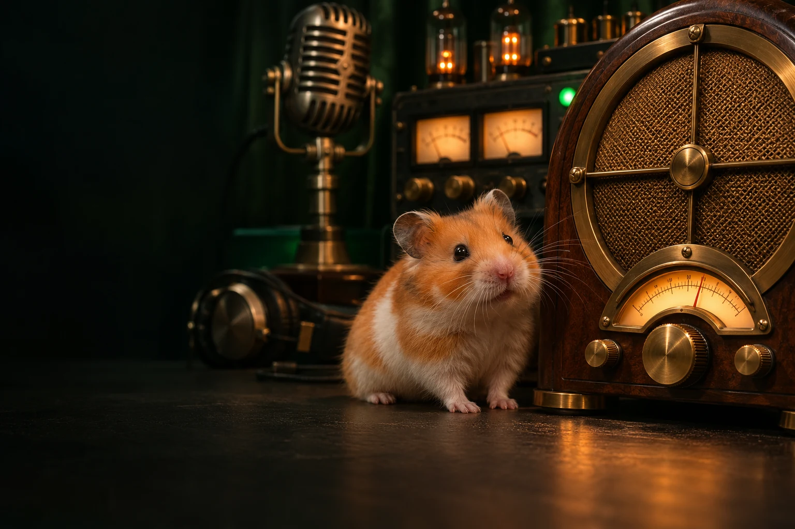

SQUEEKTOSHI’S BROADCAST DESK
Music from
the wheel.
Real wheel motion sets the tempo of an original radio mix.

Connecting
Burrow FM
Swung lo-fi beats, mellow keys and a warm bass groove.
WHEEL—RPM
TEMPO62BPM
LIVE / WHEEL CAM
The wheel room
Connecting to the live wheel…
LIVE TELEMETRY / 5 MIN
Wheel activity
5 MIN AGONOW
Collecting live readings while this page is open.